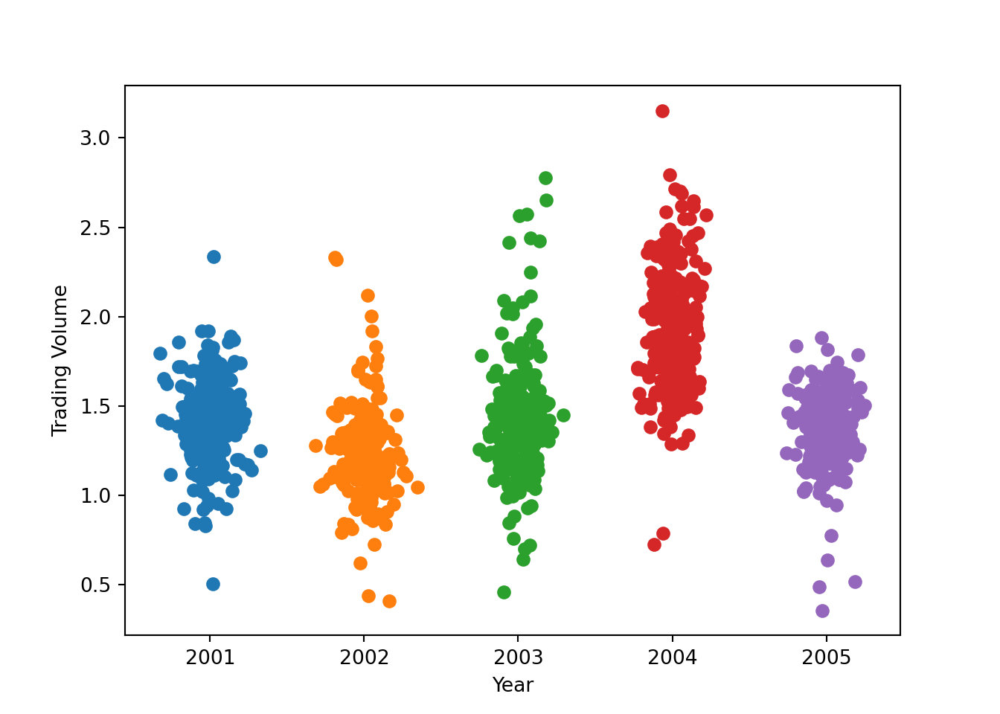

from sklearn.linear_model import LogisticRegressionfrom sklearn.discriminant_analysis import LinearDiscriminantAnalysisfrom sklearn.naive_bayes import GaussianNBfrom sklearn.neighbors import KNeighborsClassifierfrom sklearn.model_selection import train_test_splitfrom sklearn.model_selection import cross_val_scoreimport xgboost as xgbfrom sklearn.inspection import PartialDependenceDisplayfrom sklearn.metrics import accuracy_score, precision_score, recall_score, f1_score, roc_auc_score, confusion_matrix, classification_report, ConfusionMatrixDisplayimport statsmodels.api as smimport statsmodels.formula.api as smfimport numpy as npimport matplotlib.pyplot as pltimport polars as pl import polars.selectors as cs from sklearn.datasets import make_classificationstocks = pl.read_csv('data/Smarket.csv')
Lets work through a somewhat contrived example. Lets say we wanted to predict the whether the stock market is going up or down. This is not neccessarily all that interesting but will be good practice. Lets visualize the data
corrs = stocks.select(~cs.string()).corr()corrs
shape: (8, 8)
Year
Lag1
Lag2
Lag3
Lag4
Lag5
Volume
Today
f64
f64
f64
f64
f64
f64
f64
f64
1.0
0.0297
0.030596
0.033195
0.035689
0.029788
0.539006
0.030095
0.0297
1.0
-0.026294
-0.010803
-0.002986
-0.005675
0.04091
-0.026155
0.030596
-0.026294
1.0
-0.025897
-0.010854
-0.003558
-0.043383
-0.01025
0.033195
-0.010803
-0.025897
1.0
-0.024051
-0.018808
-0.041824
-0.002448
0.035689
-0.002986
-0.010854
-0.024051
1.0
-0.027084
-0.048414
-0.0069
0.029788
-0.005675
-0.003558
-0.018808
-0.027084
1.0
-0.022002
-0.03486
0.539006
0.04091
-0.043383
-0.041824
-0.048414
-0.022002
1.0
0.014592
0.030095
-0.026155
-0.01025
-0.002448
-0.0069
-0.03486
0.014592
1.0
We may also want to see some descriptives. A line plot would be nice but it would kind of hide alot so we are going to make a beeswarm plot
years_unique = stocks.unique(subset="Year")["Year"].to_list()years_num = {year: i for i, year inenumerate(years_unique)}for years in years_unique: year_data = stocks.filter(pl.col("Year") == years) y = year_data["Volume"].to_numpy() x = np.random.normal(years_num[years], 0.1, len(y)) plt.scatter(x, y)plt.xticks(range(len(years_unique)), sorted(years_unique))
([<matplotlib.axis.XTick object at 0x149cf1b10>, <matplotlib.axis.XTick object at 0x14a3c3690>, <matplotlib.axis.XTick object at 0x15cb56a10>, <matplotlib.axis.XTick object at 0x15cb677d0>, <matplotlib.axis.XTick object at 0x15cb71250>], [Text(0, 0, '2001'), Text(1, 0, '2002'), Text(2, 0, '2003'), Text(3, 0, '2004'), Text(4, 0, '2005')])
plt.ylabel("Trading Volume")plt.xlabel("Year")

We are slowly but surely seeing an upwardsish trend in trading volume. There are definitely more graphs that we can make but for now we are going to move to the study portion.
Logistic Regression
Logistic regression is probably your first classifier and is an incredibly important. They are a subfamily of Maximum Likelihood estimation. In a canned example lets say we have the a coin flip and we do it like a ton of times. We record each outcome where the probability is defined something like this.
\[\begin{align}
P(Heads) = \frac{number of heads}{number of tosses} \\
P(Tails) = 1 - P(Heads)
\end{align}
\]
We have some data and now we want to model it. We take the joint probablility as the function of some parameters aka the likelihood function. The value of theta that maxmimizes the likelihood function is called the maximum likelihood estimator.
Logit is just a sub estimator of these estimators where we make the assumption that the DGP follows a binomial distribution and that the most appropriate link function is the logistic link which is just a technical sounding way of saying we are taking the log of \(\frac{p}{1-p}\). This is really usefull because we bound the odds of an event happening between 0-1. The problem with MLE is that when underneath the hood we are logging the likelihood function because well prior to the invention of computer with this much power you would never be able to hand derive these things, but we still had data to model.
Modeling it in Python
Lets take our stock market data and try to classify whether the direction is up or down using contemporaneous volumne and what appears to be lags of volume. Using the Stats model api we can do it like this
Optimization terminated successfully.
Current function value: 0.691034
Iterations 4
x = stocks_pd.drop(['Direction', 'direction', 'Year', 'Today']).to_numpy()x = sm.add_constant(x)y = stocks_pd['direction'].to_numpy()stats_version = sm.GLM(y, x, family = sm.families.Binomial()).fit()stats_version.summary()
Generalized Linear Model Regression Results
Dep. Variable:
y
No. Observations:
1250
Model:
GLM
Df Residuals:
1243
Model Family:
Binomial
Df Model:
6
Link Function:
Logit
Scale:
1.0000
Method:
IRLS
Log-Likelihood:
-863.79
Date:
Wed, 26 Feb 2025
Deviance:
1727.6
Time:
16:23:38
Pearson chi2:
1.25e+03
No. Iterations:
4
Pseudo R-squ. (CS):
0.002868
Covariance Type:
nonrobust
coef
std err
z
P>|z|
[0.025
0.975]
const
-0.1260
0.241
-0.523
0.601
-0.598
0.346
x1
-0.0731
0.050
-1.457
0.145
-0.171
0.025
x2
-0.0423
0.050
-0.845
0.398
-0.140
0.056
x3
0.0111
0.050
0.222
0.824
-0.087
0.109
x4
0.0094
0.050
0.187
0.851
-0.089
0.107
x5
0.0103
0.050
0.208
0.835
-0.087
0.107
x6
0.1354
0.158
0.855
0.392
-0.175
0.446
form_version.summary()
Logit Regression Results
Dep. Variable:
direction
No. Observations:
1250
Model:
Logit
Df Residuals:
1243
Method:
MLE
Df Model:
6
Date:
Wed, 26 Feb 2025
Pseudo R-squ.:
0.002074
Time:
16:23:38
Log-Likelihood:
-863.79
converged:
True
LL-Null:
-865.59
Covariance Type:
nonrobust
LLR p-value:
0.7319
coef
std err
z
P>|z|
[0.025
0.975]
Intercept
-0.1260
0.241
-0.523
0.601
-0.598
0.346
Lag1
-0.0731
0.050
-1.457
0.145
-0.171
0.025
Lag2
-0.0423
0.050
-0.845
0.398
-0.140
0.056
Lag3
0.0111
0.050
0.222
0.824
-0.087
0.109
Lag4
0.0094
0.050
0.187
0.851
-0.089
0.107
Lag5
0.0103
0.050
0.208
0.835
-0.087
0.107
Volume
0.1354
0.158
0.855
0.392
-0.175
0.446
To assess our classifier we should go through several steps first we can look at the confusion matrix. Basically we can get as very general look at how well our predictions lineup with the actual data. First we need to get our predictions and then bin them into 1’s and zero
<sklearn.metrics._plot.confusion_matrix.ConfusionMatrixDisplay object at 0x15cb4f090>
This is a nice intuitive display. We are seeing what the model predicted versus what actually happens. When it comes to classification we have a variety of metrics.
Each of these metrics have a variety of benefits and tradeoffs.
Accuracy
Accuracy is nice and intuitive what proportion of correct predictions are we making? In a perfect world this is the only thing that we would use when evaluating models. However, if we have a lot of positives and very few negatives or vice versa our model is going to get good at predicting positives. But not that great at predicting negatives. When the class balance is bad enough we are going to get high accuracy because it is good at predicting the dominant class.
Precision and Recall
Precision is useful if we decompose what is in the denominator. If false positives are costly meaning that if flagging something as a positive would lead to not great outcomes we may need to maximize precision. However, we should always consider how it does with recall. Recall is the compliment to precision. In this case we are looking at the proportion of true positives and false negatives.
If we take the case of fraud and think about it like along these lines we want to strike a balance between the two maybe slightly favoring recall. While false positives are something we want to mininmize because it can cause frustrations and eat up company resources. Which isn’t good but significantly more costly. We don’t want to miss actual cases of fraud.
F1 Score
F1 score tries to strike this balance because maximizing precision or recall will lead the model to overcorrect. F1 score does a bit better with imbalanced datasets than accuracy the big drawback is we lose the interpretibility of whether the model is doing better minimizing false negatives or false positives.
Metrics
Brier Score: The Brier Score is closer in spirit to the mean squared error. So in effect we are talking about the average squared distance in probability from the true class label. This may seem kind of hard to get your head around since we are just classifying something as yes or no in a binary context or yes, no, or maybe in a multiclass context. Instead of taking the predicted class which will take on a value of 1 or 0 we are instead going to use the predicted probablity of the class. So the equation looks something like
\[
\text{Brier Score} = \frac{1}{n} \sigma^{n}_{t = 1} (\text{Predicted Probablilty of class} - \text{True Class Label})^2
\]
So much like the MSE a lower Brier score would indicate that the squared probability distance from the actual class on average. What this also means is that in the face of class imbalances it is going to bias the dominant class. If we think about the predicted probablity as simplistically as possible then the numerator is just the predicted frequency of events. If one class dominants the set then it is likely that they are also going to dominate the the predicted frequency.
Matthew’s Correlation Coefficient
The MCC measures the correlation of predicted class labels with true class labels
The nice thing about the MCC is that it has the same interpretation as the correlation coefficient. So values closer to one indicate that there is a strong positive correlation between the predicted class and the observed class. A value closer to negative one indicates that their is a strong negative correlation. As holistic measure of how well our classifier is doing it is less sensitive to class imbalance. However, it does not neccessarily tell us how well it is doing with respect to telling us the proportion of false positives like precision does or false negatives like recall does.
Test Questions
Some times employers will test you on things that aren’t just going through these. One real example you ran into is that you needed to hand calculate the True postives and the True negatives which you failed miserably and wasn’t able to even get to the rest.
You are working on a classification problem with two classes: Class 1 and Class 2. There are a total of 2000 observations in the dataset, with 1200 observations in Class 1 and 800 observations in Class 2. Your classifier produces the following predictions:
It assigns 1000 observations to Class 1. It assigns 800 observations to Class 2. Additionally, your classifier correctly classifies 1000 observations in total.
Using this information:
How many observations are true positives for Class 1 and Class 2? How many observations are false positives for each class?
For the True Postives we would do some
# Define the known valuescorrectly_classified <-1000predicted_class1 <-1000predicted_class2 <-800actual_class1 <-1200actual_class2 <-800TP2 <- (predicted_class2 - actual_class1 + correctly_classified) /2# Solve for TP1 using TP1 + TP2 = correctly_classifiedTP1 <- correctly_classified - TP2# Solve for FP1 and FP2FP1 <- predicted_class1 - TP1FP2 <- predicted_class2 - TP2TP1 + TP2
[1] 1000
# Print the resultscat("True Positives for Class 1 (TP1):", TP1, "\n")
True Positives for Class 1 (TP1): 700
cat("True Positives for Class 2 (TP2):", TP2, "\n")
True Positives for Class 2 (TP2): 300
cat("False Positives for Class 1 (FP1):", FP1, "\n")
False Positives for Class 1 (FP1): 300
cat("False Positives for Class 2 (FP2):", FP2, "\n")
False Positives for Class 2 (FP2): 500
The workflow
In the stock market example we can do something like this.
x = stocks[['Lag1', 'Lag2']]y = stocks['Direction']x_train, x_test, y_train, y_test = train_test_split(x, y, test_size =0.2, random_state =1994)
Then we fit our models like this we initiate a logit object same as we would in tidy models same goes for various other. To pair this down we are going to just use two features. One thing to note is that scikit learn regularizs the logit by default with an l2 norm aka the ridge penalty.
logit = LogisticRegression()
So lets go ahead and fit the logit and see how it does
LDA is like a lot of these a dimensionality reduction machine. We make some assumptions one being that the classes are linearly separable hence the L in LDA. We also assume equal variance covariance matrices that follow a multivariate normal distribution. To check this we plot the matrices and they should look like an ellipsis.
When classes are pretty close to perfectly seperable. This is because the MLE starts to break down. Even a firth correction may not be optimal.
If we have small sample size and the distribution of the predictors is approx normal.
I will comeback to this but for the most part we are still doing a bad job of predicting the down direction. We are also seeing some bad things in the diagnostics.
QDA
QDA is pretty similar to LDA in a lot of respects howevr it assumes that each class has its own mean and covariance rather than enforcing and equality assumptions
Naive Bayes is a classic we make the assumption that our predictors are drawn from a gaussian distribution, that each of the features is conditionally independent, and we make the assumption that the classes are linearly seperable. What is interesting about Naive Bayes is that it works pretty well
nb = GaussianNB()nb_mod = nb.fit(x_train, y_train)nb_preds = nb.predict(x_test)confusion_matrix(y_test, nb_preds)
array([[32, 84],
[36, 98]])
K-Nearest Neighbors
Finally the most “machine-learny” of the models of these classifiers that we have covered so far is K-Nearest neightbors. KNN is fairly intuitive things that are close to each other are more likely to be related to each other. We don’t make any assumptions of the functional form of the decision boundary. For the most part each of the classifiers so far we make linearity assumptions or that the classification boundary follows a Bernoulli distribution. We also make no assumptions about the distribution of the data. This is kind of cool but as we make less and less assumptions about the data we start needing more of it. However we need to ensure that each of our features are on the same scale or the algorithm is not going to do well. If we have the difference in years versus 1,000 or millions of dollars. A jump of 100 yeasrs is substantively larger than a jump in a 100 dollars but K-nearest neighbors is going to let the larger numbers dominate. So we need to rescale everything.
The other thing is we don’t have any a priori knowledge of the optimal number of neighbors. We have have some idea but for machine learning models we use something called a hyperparameter to improve our model. There are mechancical parts of our models that we don’t have control over. In this setting we are not going to change how we calculate Euclidean distance. However, the number of neighbors to set that determines the classification boundaries are. Nothing in dataset or model can tell us what is the correct number of neighbors. We basically iterate over these to find the optimal k aka the optimal number of neighbors
from sklearn.preprocessing import StandardScalerscaler = StandardScaler()caravan = pl.read_csv('data/Caravan.csv')x_df = caravan.select(pl.exclude('Purchase'))scaler.fit(x_df)
StandardScaler()
In a Jupyter environment, please rerun this cell to show the HTML representation or trust the notebook. On GitHub, the HTML representation is unable to render, please try loading this page with nbviewer.org.
<bound method KNeighborsClassifier.predict_proba of KNeighborsClassifier(n_neighbors=1)>
confusion_matrix(y_test, knn_preds)
array([[879, 61],
[ 56, 4]])
So one neighbor does pretty well but what if we could do better? We can perform a grid search over the number of neighors. 10 Neighbors is probably unreasonable. Since this is not actually all that intensive we could theoretically just use a for loop to tune this parameter. However, thats not really the best way since we have built in tools.
In a Jupyter environment, please rerun this cell to show the HTML representation or trust the notebook. On GitHub, the HTML representation is unable to render, please try loading this page with nbviewer.org.
This is kind of nice. So lets breakdown what we did. We k-fold cross-validation meaning we created 5 evenly sized folds where the model will be trained on k-1 fold. Meaning we trained the model on 4 folds. Then repeat this process. In a grid search we are kind of just going through each individual combination of hyperparameters. So we are doing k =1 distance = manhattan, k =1 distance = euclidean etc. So this maybe fine if we don’t have a ton of things to do but if we have a ton of hyperparameters than that is not all that efficient.
In a Jupyter environment, please rerun this cell to show the HTML representation or trust the notebook. On GitHub, the HTML representation is unable to render, please try loading this page with nbviewer.org.
Often times we do something akin to this where we train a bunch of models and then have to compare which one is the best. This would be a huge pain to do manually. However this is why computers are nice
So we plotting ROC-AUC curves. Generally we want it to look a lot better than this. But this will give us a chance to talk about these. When it comes to evaluating models ROC-AUC curves are a favorite. These complement each other in a lot of respects.
In our accuracy, precision, recall, and F1 scores they all try to evaluate the proportion of true positives in comparision to either total classifications or something else. However, we don’t really ever have a good intuition at what level we should be cutting off these judgements. ROC-AUC lets us plot the performance of our models at various thresholds and against the random chance. In this case there are lots of instances whwer our model is not even as good as the random classifier. We probably need more features in order to improve our sensitivity.
In general we want it to look more curvy where the ROC-AUC is a lot closer to the 1 on the Y axis. A flat curve indicates that our model performs as well as flipping a coin. In any classification task we are going to have some mistakes in classification no matter the threshold. A AUC of 0.8 would indicate that our classifier is going to classify that point correctly close to 80% of the time.
What should we do if we have some class imbalance?
So for the most part nicely balanced class data is pretty rare! Lets take a fairly simple from Julia Silge’s excellent blog post. For the most part mountaneering trips don’t tend to have a lot of deaths which is good! However, when we want to start predicting what makes a succesful climb this can be a problem if we aren’t careful.
Preprocessing: A variety of sampling techniques
So we can think about fraud and war along similar lines in the class imbalance space. For the most part we have a ton of not war or not fraud cases in these kinds of dataset. I am sure if we start to skew the class imbalances a little bit more or even just added a third class like ‘maybe fraud’ or ‘mid’ to the COW database we are going to start pushing the limits of what the model could handle.
One of the real important things is choosing evaluation metrics that can handle imbalanced classes. As we saw in the last section accuracy tends to be a poor metric with big class imbalances becuase its the total number of correct predictions divided by the total number of predicitions. The thing about these models is that they tend to do pretty well in predicting things after they are trained on some data. So the model gets really good at predicting the dominant class but gets really bad at predicting the less dominant class.
We can pray that we get more data and just by pure chance we got a bad draw with lots of class imbalance. But, for the most part those prayers will never be answered. Fundamentally if the DGP of war or fraud change we have kind of a big problem on our hands. Instead what we can do is use as variety of resampling methods to artificially create balance between the two classes. In Table 1 I outline the broad strokes of each resampling method.
Table 1
Method
What it Does
Oversampling
Bias the classifier towards the minority class by duplicating the minority class
Undersampling
Bias the classifier towards the minority class by removing examples of the dominant class
Random Oversampling Examples (ROSE)
Generate new synthetic points with some noise to the minority class
Synthetic Minority Oversampling Technique (SMOTE)
Generates new synthetic points by interpolating between existing points
Adaptive Synthetic Sampling (ADASYN)
Identify hard to classify examples meaning they do not have a ton of neighbors. Generate some synthetic points via K-nearest neighbors
Effectively what each of these are doing from the perspective of the classifier because it imposes non-uniform missclassfication costs. The simplest approach is to simply randomly add data to the minority class or randomly delete data from the dominant class. However, these approaches have some obvious drawbacks. One thing that you will notice is that we have to manually set a ratio. What ratio do we set 🤷. We may want to shoot for equal balance but we have kind of fundamentaly changed the DGP which does not come at zero cost. By oversampling we are increasing our computational cost because we are copying our data and we risk over fitting. For undersampling we are chucking useful information away a lot of useful information that may improve predictive power down the line.
To combat this there are various procedures to use more data driven approaches to make up data or sample data. SMOTE generates synthetic examples by selecting a minority class instance, finding one of its k-nearest neighbors (from the same class), and creating a new point along the line segment between them. The synthetic point is placed at a random position between the two, ensuring that the newly generated data follows the distribution of the minority class via K-NN. SMOTE is viable strategy if the skew isn’t really bad. One of the problems is that while k-NN is kind of clever we have a hyperparameter to tune which can be computationally expensive. Since SMOTE is an oversampling technique some of the same draw backs of oversampling still apply.
To handle some of the weakpoints of SMOTE we have a family of synthetic data generators try to combat overfitting. A slightly modified version of the SMOTE framework is ADASYN which generates more and more synthetic data points near points closer to the decision boundary. Effectively what is happening is that we end up generating more and more points closer to the decision boundary with the goal of class balance. Another technique, ROSE which is based on bootstrap re-sampling techniques. Effectively what that means is that we are going to randomly draw a row from our dataset, setting the probability of the drawing the minority and the majority class to be the same. Then we are going to generate a synthetic example in the same neighborhood with a small amount of noise estimated via a kernel density estimate. We are going to keep doing this over and over again till we get a balanced dataset.